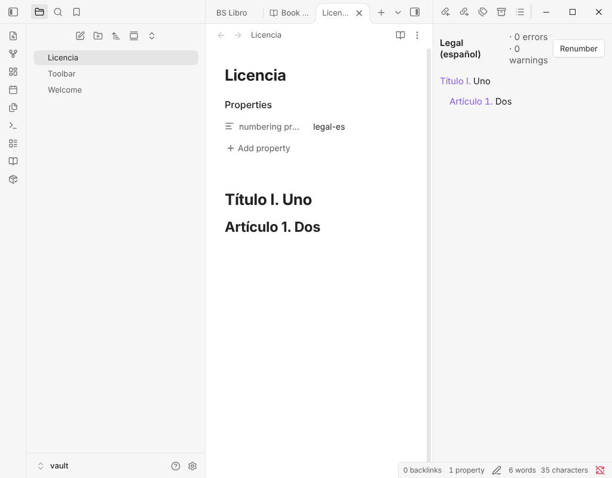

Plugin de Obsidian
Section Numbering Pro
Numera documentos, no solo títulos: contratos, tesis, normas, manuales y libros que ocupan varias notas y se citan entre sí.
Puedes probar todas las funciones Pro gratis durante 14 días, sin clave.

Qué hace y para quién
El plugin gratuito Section Numbering numera los títulos de una nota. Pro es para quien escribe documentos repartidos en varias notas, que se citan entre sí («véase el art. 3.2(b)») y salen de Obsidian hacia Word, Pandoc o LaTeX: abogados, investigadores, ingenieros y autores.
Necesita el plugin gratuito Section Numbering (0.10.0 o posterior) y funciona junto a él.
Qué añade Pro
- Perfiles de numeraciónCada nivel de título tiene su propia plantilla: Título I. / Artículo 7. / 7.1 / (a). Incluye legal-es, legal-en, contrato, academico, iso, libro y outline, y puedes escribir los tuyos en JSON.
- Referencias cruzadas entre notasUna referencia es un enlace normal cuyo alias lleva el número actual del título, y lo sigue cuando el destino se renumera. Un alias que hayas escrito tú nunca se toca.
- Documentos formados por varias notasUna nota manifiesto enumera las notas en orden y todo el documento se numera como un único texto, con índice general y exportación compilada.
- Figuras, tablas y listadosSe numeran por capítulo, se referencian como los títulos y tienen sus listas de figuras, tablas y listados.
- Panel de estructuraEl esquema numerado con cuántos enlaces apuntan a cada sección, correcciones en un clic para saltos de nivel, títulos duplicados o vacíos y referencias obsoletas, y botones para mover o bajar de nivel una sección. Los enlaces se actualizan en la misma edición.
- ExportaciónMarkdown numerado, una página HTML, Markdown para Pandoc, LaTeX y copiar como texto enriquecido para pegar en Word o en un correo.
- ReglasElige un perfil por nota, por documento, por etiqueta o por carpeta, y pide al plugin que explique qué regla ha decidido.
Lo que sigue siendo gratis, para siempre
- Números de esquema (1., 1.1., 1.2.) en tus títulos, escritos en la nota o solo mostrados en pantalla.
- Los enlaces a títulos renumerados siguen funcionando.
- Un índice que se mantiene al día solo.
- Interfaz en nueve idiomas.
Nada del plugin gratuito pasa a Pro. Cuando termina la prueba, los números que ya están en tus notas siguen funcionando y Flatten to plain numbers siempre funciona; escribir números con un perfil y exportar requieren una clave.
Precio y prueba gratuita
15 USD, pago único. Puedes probar todas las funciones Pro gratis durante 14 días, sin clave.
Pago único. Sin suscripción. El código es abierto (MIT); comprar una clave es un recibo de compra que ayuda a mantener el proyecto, no una protección contra copias.
Cómo activarlo
- Compra con el botón de esta página. El servicio de pago te envía la clave de licencia en el correo del recibo.
- Abre los ajustes del plugin en Obsidian y pega la clave.
- Pulsa Activate.
Red y privacidad
- Todo funciona sin conexión y lo que escribes se queda en tu bóveda.
- La única llamada de red: al pulsar Activate, el plugin envía la clave, una sola vez, al servicio de licencias del servicio de pago para comprobarla. Después la clave se guarda en tu dispositivo y no se vuelve a comprobar.
- Sin telemetría, sin analítica, sin cuentas y sin actualización automática. Esta página no usa cookies ni carga nada de otros sitios.
Reembolsos
Los pagos y los reembolsos los gestiona el servicio de pago. Se aplican las condiciones que verás al comprar.
Preguntas frecuentes
¿Necesito el plugin gratuito?
Sí. Section Numbering Pro necesita el plugin gratuito Section Numbering (0.10.0 o posterior).
¿Qué pasa cuando termina la prueba?
Lo que ya está en tus notas sigue funcionando y Flatten to plain numbers siempre funciona. Escribir números con un perfil y exportar requieren una clave.
¿Cambiará mis notas sin avisar?
No. Los números se escriben solo cuando ejecutas un comando, y un solo Ctrl+Z deshace una numeración, enlaces incluidos.
¿Dónde encuentro mi clave?
En el correo del recibo que envía el servicio de pago.